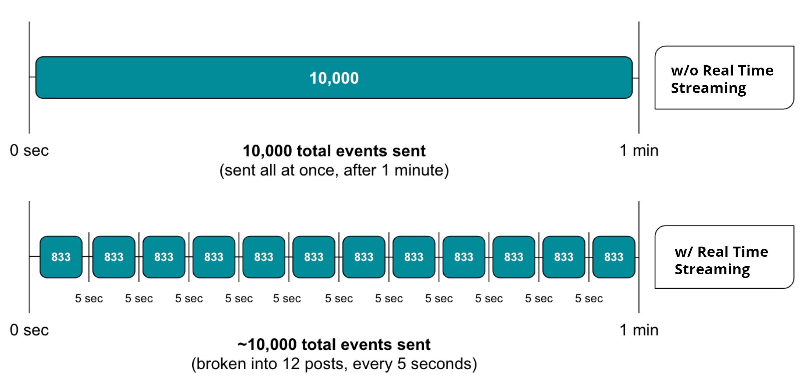

With real time streaming, your APM event data is sent to New Relic every five seconds. You can query and visualize your data for transactions, errors, and custom events in near real time. The smaller payloads result in faster chart refreshes and faster queries of data that is the most important to you.
No configuration is needed to take advantage of real time streaming. All you need to do is ensure your APM agent version is up to date.
Real time streaming doesn't result in more events being sent. The combination of more frequent posts, with a smaller number of events per post, results in approximately the same number of events per minute as there would be without real time streaming.
The following image shows a comparison between data sent to New Relic with and without real time streaming. Note that 10,000 is an example number of events; some agents have lower default limits.

The overall limits on how many events can be sent per minute haven't changed. Also, non-event data (spans, traces, and metrics) are unaffected; they're still sent every minute.
Use real time streaming to quickly understand the impact when something has changed, such as deploying a new app version.
To enable real time streaming, update to the latest New Relic APM agent. You don't need to configure anything to enable real time streaming; it will automatically report faster!
Real time streaming is supported by all APM agents. Here are the minimum agent versions:
If Transaction event reporting is disabled, this can affect some UI elements throughout New Relic. You may see some empty charts on some UI pages that rely on this data.
When building charts, include the following in your NRQL query:
NRQL clause
Comments
SINCE 5 minutes ago
Be sure to add a SINCE 5 minutes ago clause to your NRQL query in order to take advantage of the 5 second chart refresh interval. This is because the chart's refresh interval is based on the time window.
TIMESERIES bucket
To set the refresh interval for time series charts, you can also specify the bucket size as an optional argument to the TIMESERIES clause. For example, SINCE 30 minutes ago TIMESERIES 5 seconds will display a 30 minute window at a 5 second resolution. You can have a maximum of 366 buckets.
You can visualize the results of your NRQL query in New Relic One:
SINCE and TIMESERIES clauses to take advantage of the 5 second refresh intervals.